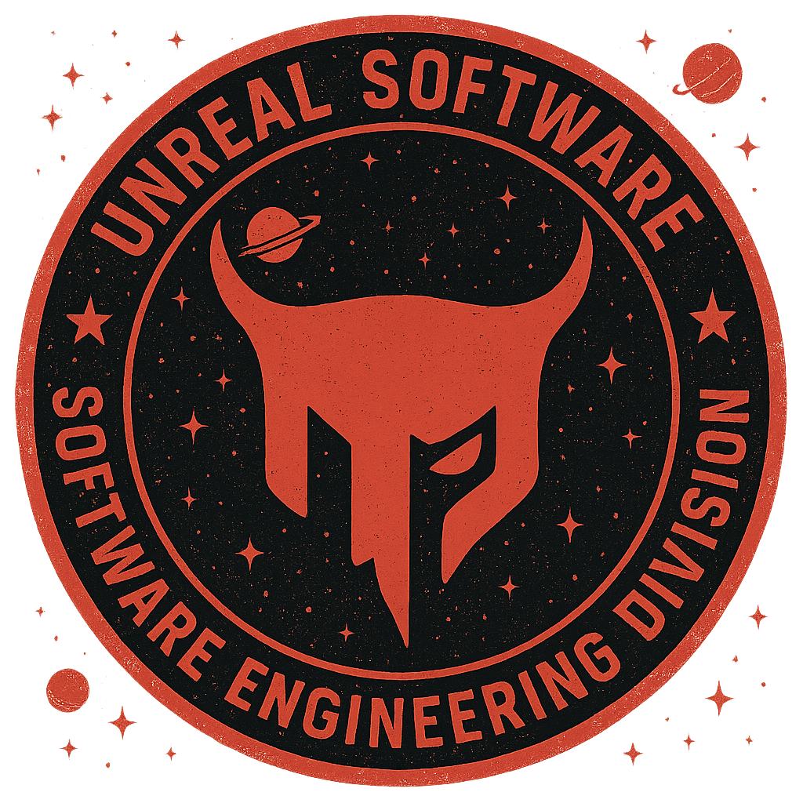

← unrealsoftware — homeThe Doodle Universe
Hand-drawn, physically accurate tours of spacetime. Real equations, real constants, and the original paper behind every idea — so you can go read the source.
“If I have seen further it is by standing on the shoulders of Giants.” * Isaac Newton
1.Anatomy of a black hole
Event horizon, photon sphere, ISCO, singularity — and a free playground: click to drop a particle into orbit, drag to fling one, and let the real equations decide its fate.
measured — black holes are photographed (EHT 2019) and orbited by tracked stars (Sgr A*); the interior anatomy is the exact math of a tested theory.
doodle dictionary — what do these words mean?
- event horizon
- The one-way surface around a black hole: at radius rs = 2GM/c² the escape speed reaches the speed of light, so from inside, every possible direction leads further in. Nothing that crosses it — light included — ever comes back out.
- Schwarzschild radius (r_s)
- The size you would have to squeeze a mass down to for it to become a black hole. Every object has one: Earth's is 9 mm (a marble), the Sun's is 2.95 km. An object only is a black hole if all its mass actually sits inside that radius.
- photon sphere (1.5 r_s)
- The distance at which gravity bends light into a closed circle — photons literally orbit the hole. The orbit is unstable: the slightest wobble sends light spiralling in or flying off.
- ISCO (3 r_s)
- The innermost stable circular orbit. Outside it, matter can circle forever. Inside it, no amount of sideways speed produces a stable orbit — everything spirals in. That is why real accretion disks have a sharp inner edge.
- accretion disk
- A ring of gas spiralling inward, heated by friction to millions of degrees until it glows in X-rays. Most of what we actually see of a black hole is its disk — the hole itself emits (almost) nothing.
- singularity
- The central point where general relativity predicts infinite density and curvature — in other words, where the theory stops making sense. Most physicists read it as the place where an undiscovered theory of quantum gravity must take over.
- X-rays (how we actually spot black holes)
- Light with wavelengths thousands of times shorter than what eyes can see, emitted by gas heated to millions of degrees — exactly the temperature of the inner accretion disk. Earth's atmosphere blocks X-rays, so this astronomy is done from space; the X-ray source Cygnus X-1 was the first black hole ever identified.
- photon ring & shadow
- Light bent around the hole piles up into a bright ring of apparent radius ≈2.6 rs, framing a dark central "shadow" ≈5.2 rs across — that ring-with-a-hole is literally what the Event Horizon Telescope photographed in 2019.
Schwarzschild (non-spinning) black hole. G = 6.674×10⁻¹¹ m³ kg⁻¹ s⁻², c = 299,792,458 m/s.
A black hole is not a vacuum cleaner — it is a region where gravity has won so completely that spacetime itself folds shut. The event horizon at radius rs is the point of no return: inside it, every possible path leads inward, so not even light escapes. Karl Schwarzschild found this radius in 1915–16, solving Einstein's brand-new field equations while serving on the Russian front of World War I.
Outside the horizon there are two more famous circles. At 1.5 rs light itself can orbit — the photon sphere. And at 3 rs sits the ISCO, the innermost stable circular orbit: the closest distance at which matter can circle forever. Don't take my word for it — click anywhere in the sandbox to drop a particle into a circular orbit, or drag to fling one with your own aim. The dot's fate is computed from the exact Schwarzschild geodesic equation, not scripted: outside the ISCO your particles circle (and visibly precess, if the orbit is eccentric); inside it they spiral in no matter what you try. That's why real accretion disks have an inner edge.
At the very center the equations predict a singularity — a point of (formally) infinite density where general relativity stops making predictions. Roger Penrose proved in 1965 that once a horizon forms, a singularity is not optional but inevitable — work that earned the 2020 Nobel Prize in Physics.
But wait — if not even light escapes, how do we see black holes at all? We don't, directly: we see what they do to their surroundings. Gas spiralling through the accretion disk is friction-heated to millions of degrees, and matter that hot shines in X-rays — light far beyond what eyes detect. That is how the first black hole was found: Cygnus X-1, a fierce X-ray source whose invisible partner turned out to be too heavy to be anything else (Webster & Murdin, 1972). Since then we've learned to "see" them two more ways: the Event Horizon Telescope photographed the glowing photon ring around M87*'s dark shadow in radio waves (2019), and LIGO hears them collide in gravitational waves. Flip the sim to telescope view to compare what your eye would catch with what an X-ray telescope catches.
Now try the Earth and Sun buttons. They are drawn as what they really are — ordinary bodies, not black holes — because a mass only becomes a black hole if it is squeezed entirely inside its own rs. Earth's is 9 mm (crush the planet smaller than a marble); the Sun's is 2.95 km, about 236,000× smaller than the Sun actually is — and no force in the Sun's future will ever compress it that far. For the real black holes (Sgr A*, M87*) notice that changing the mass never changes the drawing's shape, only the scale bar: black hole geometry is self-similar, from city-sized stellar holes to M87*, whose horizon is wider than our whole planetary solar system.
“Spacetime tells matter how to move; matter tells spacetime how to curve.” * John Archibald Wheeler
2.A stick figure falls in
Spaghettification, and why the outside universe sees you frozen forever while you sail right through.
established theory — gravitational time dilation is measured daily; the horizon-crossing story is the exact same equations — nobody has gone in to check.
doodle dictionary — what do these words mean?
- proper time (τ)
- The time measured by your own wristwatch, along your own path through spacetime. Alice's proper time is what she experiences — and it is perfectly normal to her all the way down.
- gravitational time dilation
- Clocks deep in gravity genuinely run slower than clocks far away, by the factor √(1−rs/r). It is not an illusion: GPS satellites must correct for it every day or maps would drift by kilometers.
- tidal force & spaghettification
- Gravity pulls harder on your near side than your far side; the difference stretches you. It grows like 1/r³, so near a small black hole it becomes violent enough to pull a body into a noodle — the actual astrophysics term is spaghettification.
- gravitational redshift
- Light climbing out of a gravity well loses energy, so its wavelength stretches toward the red. Light from something at the horizon is stretched infinitely — which is why Bob sees Alice fade and redden instead of vanish.
Tidal stretch across a body of length L; gravitational time dilation; gravitational redshift.
Meet Alice (falling) and Bob (watching from far away). Gravity pulls harder on Alice's feet than on her head, because her feet are closer — and near a black hole that difference becomes monstrous. The stretch grows like 1/r³, which is why physicists genuinely call it spaghettification.
Here is the surprise: around a small black hole (10 solar masses) the tides at the horizon reach tens of millions of g — Alice is shredded long before she arrives. Around a supermassive one like Sgr A* (4.15 million solar masses, the black hole at the center of our galaxy) the horizon tide is roughly a ten-thousandth of Earth's gravity — she crosses the point of no return without feeling a thing. Bigger is gentler.
Meanwhile the two clocks disagree ever more violently. Alice's own (proper) time ticks normally and she reaches the horizon in finite time. But every second of hers takes 1/√(1−rs/r) of Bob's seconds — a factor that blows up to infinity at the horizon. Bob sees her slow down, freeze, and redden (her light is gravitationally redshifted) — an image fading forever at the edge, like the tesseract scene's premise in Interstellar. Both stories are true. That is general relativity.
3.Orbits, ISCO & Mercury's wobble
Newton vs Einstein, side by side — the 43 arcseconds that proved general relativity.
measured — Mercury's 43″/century has been tracked for 160+ years, and the star S2 shows the same precession around Sgr A* (GRAVITY, 2020).
doodle dictionary — what do these words mean?
- perihelion
- The point of an orbit closest to the Sun (from Greek peri, near + helios, Sun). For orbits around anything else the general word is periapsis. The orange dots in the sim mark it on every pass.
- precession
- The slow rotation of the orbit's ellipse itself — the oval keeps its shape but its long axis swings around, drawing a rosette over many orbits.
- arcsecond (″)
- 1/3600 of a degree — the units astronomers use for very small angles. Mercury's famous anomaly is 43 of these per century.
- angular momentum (L)
- The conserved "sideways-ness" of an orbit. In the equation on this page, L is what keeps the planet from falling straight in — unless it dips below the ISCO, where even angular momentum stops helping.
The orbit equation in Schwarzschild spacetime. Newton's version is the same without the u² term — the sim integrates both and the difference you see is exactly that term.
Ever since Urbain Le Verrier's celestial-mechanics work of 1859, astronomers had known something was subtly wrong with Mercury. Its elliptical orbit slowly rotates (precesses), and after subtracting the tugs of every other planet there remained a stubborn, unexplained 43 arcseconds per century — about the width of a small coin seen from a hundred meters away, accumulated over a whole century. Tiny, but real, and Newton's gravity could not produce it (Le Verrier even proposed a new planet, "Vulcan", to explain it — it does not exist).
In November 1915 Einstein applied his brand-new field equations to Mercury and the missing 43″ fell out exactly. No tuning, no new constants. He told colleagues the discovery gave him heart palpitations.
The left panel integrates Newton's orbit equation; the right adds the single extra term general relativity demands (the u² in the equation above). For Mercury the effect is microscopic — use the exaggeration slider to see the rosette it draws over millennia; the number printed below is always the true computed value. Then try the black-hole preset: close to the horizon the same term becomes overwhelming. Dip below the ISCO and the relativistic orbit does something Newton's never can — it stops orbiting and plunges.
“For a few days, I was beside myself with joyous excitement.” * Albert Einstein, letter to Paul Ehrenfest (January 1916), on explaining Mercury's orbit
4.E = mc² — mass is frozen energy
Pick something ordinary, annihilate it, and see why a paperclip outguns an atomic bomb. Click the object itself to set it off.
measured — confirmed since 1932, and re-confirmed daily by every nuclear reactor and particle collider on Earth.
doodle dictionary — what do these words mean?
- mass–energy equivalence
- Mass and energy are the same physical quantity in different costumes: every kilogram of matter is 9×10¹⁶ joules, whether or not you ever cash it in. Even a stretched spring or a hot cup of tea weighs (immeasurably) more than a relaxed, cold one.
- annihilation
- When matter meets antimatter, 100% of both masses converts to light. It is the only process that cashes in the full E = mc² — which is why this sim has to say "if it met its antimatter twin".
- nuclear fusion
- Squeezing light nuclei together into heavier ones. The product weighs ~0.7% less than the ingredients, and that missing mass leaves as energy — it is how the Sun has shone for 4.6 billion years on a "mere" 0.7% exchange rate.
- kiloton (kt)
- The energy of a thousand tons of TNT exploding: 4.184×10¹² joules. The Hiroshima bomb was about 15 kt — released from converting roughly 0.7 grams of mass.
The c² is the exchange rate between kilograms and joules — and it is enormous.
In September 1905 — the same miracle year as special relativity — Einstein published a three-page afterthought asking whether a body's inertia depends on its energy content. The answer, E = mc², says mass and energy are one thing. The reason nobody noticed for all of human history is the exchange rate: multiply kilograms by c² ≈ 90,000,000,000,000,000 to get joules.
That's why "inside a small mass there is enormous energy": one gram — a paperclip — holds 8.99×10¹³ joules, more than the Hiroshima bomb released. The bomb itself converted less than a gram of its 64 kg of uranium. The Sun converts about 0.7% of the hydrogen mass it fuses, four million tons of mass into light every second — and that 0.7% is enough to warm a planet 150 million km away.
The equation was confirmed in the laboratory in 1932, when Cockcroft and Walton split lithium nuclei and found the fragments' energy matched the missing mass exactly. It is probably the most-tested formula in physics.
“Mass and energy are both but different manifestations of the same thing.” * Albert Einstein
5.Bending time
A bouncing photon shows why moving clocks tick slowly — then Interstellar's planet and your phone's GPS make it real.
measured — GPS corrects for it every second; atomic clocks flown on airliners (1972) and orbiting on the ISS drift by exactly the predicted amounts.
doodle dictionary — what do these words mean?
- light clock
- The simplest clock imaginable: a photon bouncing between two mirrors, one tick per bounce. Because everyone measures light at the same speed c, watching a moving light clock forces time dilation on you — the photon's zigzag path is longer, so the moving clock's ticks come slower.
- Lorentz factor (γ)
- The stretch factor of time (and squeeze factor of length): γ = 1/√(1−v²/c²). It is 1.005 at 10% of light speed, 2.29 at 90%, 22.4 at 99.9% — it only bites when you go really fast.
- frame of reference
- A point of view moving at some velocity. Relativity's deal: physics looks the same in every non-accelerating frame, and nobody's frame is "the correct one" — the traveler genuinely experiences less time, and both descriptions are right.
- gravitational vs velocity time dilation
- Two separate effects that both slow clocks: moving fast (special relativity) and sitting deep in gravity (general relativity). GPS satellites feel BOTH — speed slows their clocks by 7 μs/day, weaker gravity speeds them by 46 μs/day, and engineers must correct the difference daily.
Left: moving clocks (special relativity). Right: clocks in gravity (general relativity).
Time is not a universal drumbeat — it is personal. The light clock shows why with nothing but geometry: the moving clock's photon must travel a longer zigzag, light speed is the same for everyone (that is Einstein's 1905 axiom), so the moving clock simply ticks less often. Slide the speed up and watch the traveler's clock fall behind.
In Interstellar, one hour on Miller's planet costs seven years outside — a factor of 61,362. That is gravitational time dilation, and Kip Thorne (who got a Nobel Prize two years after the film) checked the numbers: it requires orbiting just above the horizon of a black hole spinning within one part in 10¹⁴ of the maximum. Extreme — but not wrong. The movie is a legitimate solution of Einstein's equations.
And it's not science fiction: your phone corrects for this every day. GPS satellite clocks run fast by 45.7 μs/day (weaker gravity) and slow by 7.2 μs/day (orbital speed), netting +38.5 μs/day. Uncorrected, position fixes would drift by eleven kilometers every day. Relativity is in your pocket.
6.Gravitational lensing
Mass bends light. Drag an invisible heavy thing across a starfield and watch the sky warp — the experiment that made Einstein famous.
measured — the 1919 eclipse measured it first; thousands of lensed galaxies and Einstein rings have been photographed since.
doodle dictionary — what do these words mean?
- gravitational lens
- Any mass — a star, a galaxy, a clump of dark matter — whose gravity bends passing light like a (badly made) glass lens. The sky behind it gets displaced, stretched, brightened, and sometimes multiplied.
- Einstein ring (θ_E)
- When source, lens and observer line up perfectly, the source's light is smeared into a full circle of angular radius θE. Dozens of real ones have been photographed — the sim draws arcs when a star gets close to alignment.
- deflection angle (α)
- How much a light ray bends: α = 4GM/(c²b), where b is how close the ray skims the mass. Grazing the Sun: 1.75 arcseconds — exactly double what Newtonian physics predicts, which is what made the 1919 test decisive.
- microlensing
- Lensing by a single star: the images are separated by only ~a milliarcsecond — far too close to see apart — but the brightening is detectable. It is one of the ways we hunt exoplanets and dark compact objects.
Deflection; the Einstein radius; and the point-lens equation the sim solves for every star — its two solutions are the two images you see.
General relativity says mass curves spacetime, and light follows the curves — so a heavy object displaces the images of everything behind it. In the sandbox, the blob you drag is invisible: you only know it's there because the stars behind it split into pairs of shifted images (faint × marks show where each star truly is). Line one up and it smears into an Einstein ring.
This is the effect that made Einstein a household name. In May 1919, Eddington's expeditions photographed stars beside the eclipsed Sun and measured their displacement: 1.75″, Einstein's number, twice Newton's. "LIGHTS ALL ASKEW IN THE HEAVENS," ran the New York Times headline. Einstein himself thought star-on-star lensing would never be observable (his 1936 paper politely says so) — today, lensing maps dark matter, magnifies the most distant galaxies we know, and finds planets. We will meet it again in the dark matter chapter.
10.The Big Bang & the expanding universe
Press play and watch 13.8 billion years happen: the glowing fog, first light, the Dark Ages, the first stars, and galaxies fleeing from every point of view. Click any galaxy to prove there is no center.
measured — the expansion (Hubble 1929), the leftover heat glow of the hot early universe (the CMB, 1965, now mapped to millionths of a degree), and the abundances of light elements all independently confirm a hot dense beginning ~13.8 billion years ago. What happened in the first instant, and what "banged", remain open.
doodle dictionary — what do these words mean?
- the Big Bang
- Not an explosion in space, but an expansion of space from a hot, dense state ~13.8 billion years ago. Run the movie backwards and everything crowds together and heats up; it does not converge on a point you could stand next to. Lemaître called the start the "primeval atom".
- the scale factor a(t)
- One number describing the size of the universe. a = 1 today; a = 0.5 means all cosmic distances were half as big. Space stretches by growing a — galaxies barely move through space, space itself gets bigger between them.
- Hubble's law (v = H₀d)
- The farther a galaxy, the faster it recedes — and every observer, anywhere, sees exactly this. That is what "no center" means: expansion looks the same from every raisin in the rising loaf.
- redshift (z)
- Light stretched by the expansion it crossed: 1 + z = 1/a. A galaxy we see at z = 1 emitted its light when the universe was half its present size.
- the cosmic microwave background (CMB)
- When the universe had cooled to ~3000 K (at a ≈ 1/1100), it became transparent and released a flash of light. Stretched by expansion, that flash is now a 2.725 K microwave glow filling the whole sky — the oldest light there is, and the strongest evidence for the hot Big Bang.
- the Dark Ages & the first stars
- Between first light (~380,000 yr) and the first stars (~100–200 million yr) nothing in the universe shone — gravity was silently gathering gas. Galaxies took a few hundred million years more. That's why the sim shows NO galaxies before then: they genuinely did not exist yet.
The Friedmann equation (flat universe, Ω_m = 0.315 matter, Ω_Λ = 0.685 dark energy) — the sim integrates it to get a(t); redshift and CMB temperature follow. H₀ ≈ 67–73 km/s/Mpc (the "Hubble tension" is a live research puzzle). The radiation-dominated first ~50,000 years are omitted, so the very earliest ages shown are approximate — the readout flags this.
In 1929 Edwin Hubble noticed that nearly every galaxy is racing away from us, and the farther one is, the faster it goes. The naive reading — "we're at the center of an explosion" — is wrong, and the sim shows why: click any galaxy to make it home, and it sees precisely the same law. Space itself is expanding, like dots on an inflating balloon; there is no special dot.
Wind the clock back and the galaxies pile together and the temperature climbs. Georges Lemaître — a Belgian priest and physicist — worked this out from Einstein's equations in 1927, two years before Hubble's data, and proposed the universe began from a hot, dense "primeval atom". Einstein initially told him "your calculations are correct, but your physics is abominable." Lemaître was right.
The clincher came by accident in 1965: Penzias and Wilson, hunting for the source of a persistent hiss in their antenna, had stumbled onto the cosmic microwave background — the cooled-down flash from when the universe first turned transparent. Drag the clock to a ≈ 1/1100 and watch the thermometer hit ~3000 K: that is the moment that glow was set free, now stretched to a chilly 2.725 K. It is the baby photo of the cosmos, and it matches the hot Big Bang to extraordinary precision.
“The evolution of the world can be compared to a display of fireworks that has just ended: some few red wisps, ashes and smoke.” * Georges Lemaître
11.Dark matter
The white points are the telescope's verdict; the curve is your model. Try to fit the data with only visible matter — then discover what it takes.
measured effect, unknown identity — that galaxies and clusters contain ~5× more gravitating mass than their visible matter is measured many independent ways (rotation curves, lensing, the CMB, colliding clusters). What dark matter is made of is still unknown — no particle has been caught. Alternative-gravity theories exist but fit the full evidence worse.
doodle dictionary — what do these words mean?
- rotation curve
- A plot of how fast stars orbit versus their distance from the galaxy's center. It's the galaxy's speedometer — and reading it is how the missing mass was found.
- Keplerian falloff
- What you'd expect if a galaxy's mass sat in its bright middle: outer stars, like outer planets, should orbit slower with distance (v ∝ 1/√r). Real galaxies refuse to do this.
- flat rotation curve
- The shocking observation: orbital speed stays roughly constant (~220 km/s for the Milky Way) way out past the visible stars. That needs far more mass, spread far wider, than anything glowing.
- dark-matter halo
- A vast, roughly spherical cloud of unseen mass enveloping each galaxy, five times heavier than all its stars and gas. It doesn't emit, absorb, or reflect light — we know it only by its gravity.
- gravitational evidence
- Dark matter also bends light (lensing), shapes the CMB's pattern, and stayed behind when two galaxy clusters collided (the Bullet Cluster) — several independent fingerprints of the same missing mass.
In 1933 Fritz Zwicky clocked galaxies whipping around inside the Coma Cluster so fast that the cluster's visible mass could never hold them — it should have flown apart. He coined dunkle Materie, dark matter, and was mostly ignored for forty years.
Then in the 1970s Vera Rubin measured the speedometer of the Andromeda galaxy star by star, expecting the outer stars to lag like distant planets. They didn't: the curve went flat and stayed flat, far beyond the glowing disk. Toggle the halo off in the sim and the orange curve dives (that's all the visible matter can do); toggle it on and the outer tracer stars speed up to match the flat observed curve. The only way to hold a galaxy together spinning like that is a huge halo of invisible mass — about five times all the stars combined.
Honest status: the gravity is beyond doubt and confirmed five independent ways. But every attempt to catch a dark-matter particle has so far come up empty, and that is one of the biggest open questions in physics — exactly the kind of frontier where the next real discovery is hiding.
12.Dark energy — the accelerating universe
Two views: the actual 1998 supernova measurement that shocked physics, and a dial-your-own-universe fate machine — freeze, coast, accelerate, or crunch.
measured effect, unknown identity — that the expansion is speeding up was measured with distant supernovae in 1998–99 (Nobel Prize 2011) and confirmed by the CMB and galaxy surveys. The cause — a "dark energy" making up ~68% of the universe — is real in its effects but deeply mysterious in its nature.
doodle dictionary — what do these words mean?
- dark energy
- A form of energy filling empty space itself that pushes the expansion to accelerate. It's about 68% of everything, yet its density is fantastically small — it only wins on the largest scales, over billions of years.
- the cosmological constant (Λ)
- The simplest dark energy: a constant energy of the vacuum. Einstein added Λ in 1917 to keep the universe static, dropped it as his "biggest blunder" when Hubble found expansion — and it came roaring back in 1998 as the driver of acceleration.
- Ω_m and Ω_Λ
- The fractions of the universe's contents that are matter (Ω_m) versus dark energy (Ω_Λ). Ours is measured near Ω_m = 0.31, Ω_Λ = 0.69, and they sum to ~1 (a geometrically flat universe).
- Big Crunch vs Big Freeze
- Fate depends on the mix. Enough matter and no dark energy: gravity wins, everything recollapses (Big Crunch). Dark energy dominating (our case): expansion accelerates forever toward a cold, empty, dark future (the Big Freeze).
- standard candle
- A Type Ia supernova — an exploding white dwarf with a known true brightness. Compare apparent to true brightness and you get its distance; its redshift gives the expansion then. That's how the acceleration was caught.
The acceleration equation: ordinary matter (p ≈ 0) decelerates, but dark energy has negative pressure and pushes. Acceleration begins once the universe grows past a_accel — for our values, around redshift z ≈ 0.6.
By the 1990s two rival teams were measuring the expansion's history with exploding stars, fully expecting to see it slowing down — gravity should be putting on the brakes. In 1998 they found the opposite: distant supernovae were fainter, hence farther, than a decelerating universe allowed. The expansion is speeding up. It won both teams the 2011 Nobel Prize and rewrote the cosmos: something with anti-gravity pressure, "dark energy", dominates it.
Play with the two dials. Matter always pulls the curves down; dark energy curves them up. With enough matter and no dark energy the universe turns around and recollapses into a Big Crunch; with our measured mix (Ω_m ≈ 0.31, Ω_Λ ≈ 0.69) it coasts, then — around redshift z ≈ 0.6, roughly 6 billion years ago — tips into acceleration and runs away forever. The sim marks that hand-off on our curve.
Take it seriously and it's humbling: the matter you can see is under 5% of the universe. About 27% is dark matter and 68% is dark energy — 95% of reality is made of things we can measure the gravity of but cannot yet name. Which is not a failure; it's the map of where the undiscovered country begins.
13.Wormholes & exotic matter
Two mouths, one throat, and the impossible stuff needed to keep it open. Click either mouth to send a traveler through.
speculative — valid solutions of Einstein's equations, but zero observational evidence — and nobody knows if exotic matter exists beyond microscopic whispers.
doodle dictionary — what do these words mean?
- wormhole (Einstein–Rosen bridge)
- A tunnel connecting two distant regions of spacetime — mathematically, the Schwarzschild solution continued "through" the hole. Einstein and Rosen found it in 1935 while trying to build a model of elementary particles, of all things.
- throat
- The narrowest cross-section of the tunnel, radius b₀. In the natural Einstein–Rosen version the throat is dynamic: it pinches shut so fast that not even light gets across (Fuller & Wheeler proved it in 1962).
- exotic matter
- Material with negative energy density (as measured by light rays crossing the throat) — it would "fall up". General relativity demands it to hold a throat open; quantum physics grudgingly allows tiny amounts (the Casimir vacuum — Chapter IX) but nobody knows how to get a Jupiter's worth.
- traversable wormhole
- One you could actually cross and survive: no horizon, tides you can live through, two-way traffic. Morris & Thorne wrote down the requirements in 1988 — as a physics teaching exercise, sparked by Carl Sagan's novel Contact.
- embedding diagram
- The funnel picture: 2D space curvature drawn as a 3D surface so we can see it. The funnel is not "in" space — it IS space.
Flamm's funnel (1916); the Morris–Thorne metric; and the exotic-matter condition the flare-out of the throat forces on you.
Fold a piece of paper and punch through: that's the wormhole idea, and it is as old as general relativity itself. The 1935 Einstein–Rosen bridge is hiding inside the ordinary Schwarzschild black hole solution — but it is a trap. Fuller and Wheeler showed the throat slams shut faster than light can cross it: fly in, and you meet the singularity, not the other side. Watch it happen in the sim.
In 1985 Carl Sagan asked Kip Thorne how to get his heroine across the galaxy without breaking physics. Thorne turned the question into a homework problem — "what does general relativity require of a wormhole you could actually traverse?" — and the 1988 Morris–Thorne paper answered: it works, if the throat is threaded with matter of negative energy density. Flip the sim to their mode and the pink exotic matter props the funnel open; the readout computes just how much you'd need — roughly a Jupiter of "negative mass" for a one-meter throat.
Does exotic matter exist? In whispers: the Casimir effect really does produce negative energy densities between metal plates (we'll build it in Chapter IX). Whether nature allows enough of it, in the right shape, without a horizon — that is an open question, which is the honest and exciting answer.
14.Hawking radiation — black holes evaporate
The smaller the hole, the hotter it burns. Fast-forward one to its final flash.
established theory, unobserved — the calculation is standard quantum field theory, but the real radiation is far too faint to detect — only laboratory analogues have been seen.
doodle dictionary — what do these words mean?
- Hawking radiation
- A faint glow every black hole must emit, discovered by Stephen Hawking in 1974 when he applied quantum theory near a horizon. The energy comes out of the hole's own mass — so, absurdly but inevitably, black holes evaporate.
- virtual particle pairs
- The popular picture (Hawking's own, with his warning that it's heuristic): pairs of particles constantly pop in and out of the vacuum; at a horizon, one partner can fall in carrying negative energy while the other escapes for real. The exact calculation uses quantum fields in curved spacetime — the answer is the same.
- black hole temperature
- T = ℏc³/(8πGMkB) — inversely proportional to mass. A solar-mass hole sits at 60 billionths of a kelvin (colder than space itself, so today it still grows); a mountain-mass hole would blaze hotter than any star.
- primordial black holes
- Hypothetical small holes forged in the Big Bang's density ripples. One born at about 1.7×10¹¹ kg would be finishing its evaporation — exploding — right about now. Telescopes are genuinely looking for the flashes.
Temperature and lifetime. Note the M in the denominator of one and M³ in the numerator of the other: small holes are hot and brief.
In 1974 Hawking asked what quantum field theory does at an event horizon, and got an answer nobody wanted: black holes glow. Not metaphorically — with an honest temperature, an honest spectrum, and a mass that slowly ticks down as the radiation carries energy away. The 1974 Nature letter is charmingly titled with a question mark.
The catch is the timescale. A solar-mass hole radiates at 10⁻²⁸ watts and would need ~10⁶⁷ years to evaporate — 10⁵⁷ times the current age of the universe — and for now it can't even start, because it drinks more from the cosmic microwave background (2.7 K) than it emits at 10⁻⁸ K. But evaporation accelerates viciously as the hole shrinks: the final second alone releases ~2×10²² J — millions of megatons. Press fast-forward to skip the boring 10⁶⁷ years.
Hawking radiation also opened physics' deepest active wound: if the hole evaporates away completely, what happened to the information that fell in? That "information paradox" is still being fought over, and whoever settles it will probably be explaining quantum gravity while they're at it.
15.Gravitational waves — hearing spacetime
Two black holes spiral in, spacetime rings like a struck bell, and a detector on Earth flinches by a fraction of a proton.
measured — LIGO/Virgo have heard hundreds of mergers since 2015 (Nobel Prize 2017); the waveforms match general relativity's predictions.
doodle dictionary — what do these words mean?
- gravitational wave
- A ripple in spacetime itself, travelling at the speed of light, predicted by Einstein in 1916. Masses in violent asymmetric motion — like two orbiting black holes — shake the geometry around them the way a flicked bedsheet shakes.
- strain (h)
- The fractional stretch-and-squeeze the wave causes: h = ΔL/L. GW150914 hit Earth at h ≈ 10⁻²¹ — LIGO's 4-km arms breathed by 1/200th of a proton's width, and the machine heard it.
- chirp
- The signature sound of an inspiral: as the orbit shrinks, both the frequency and the loudness rise — literally a rising "whoop" when converted to audio. The wave frequency is exactly twice the orbital frequency.
- ringdown
- After merging, the single lopsided hole vibrates its bumps away in a few milliseconds, ringing like a struck bell at a pitch set by its mass and spin — the final flourish of the waveform.
Twice the orbital frequency (the mass pattern repeats every half orbit); strain from the changing quadrupole. The drawn chirp uses the Newtonian-order inspiral — real detection templates add full GR corrections.
For sixty years gravitational waves were theory. Then came the drumroll: Hulse and Taylor's binary pulsar (1975) was found to be losing orbital energy at exactly the rate wave emission predicts — an indirect detection worth a Nobel. And at 09:50:45 UTC on 14 September 2015, both LIGO detectors twitched in unison: two black holes of 36 and 29 solar masses, 1.3 billion light-years away, had merged into one of 62.
Do the arithmetic: 36 + 29 = 65, not 62. The missing 3 solar masses became gravitational waves in about 0.2 seconds — a peak power greater than the light of every star in the observable universe combined. E = mc² again, at full volume.
Two years later GW170817 merged two neutron stars: seventeen seconds of chirp, then — 1.7 s after the gravitational wave — a gamma-ray burst from the same spot, then a weeks-long glow showing freshly forged gold and platinum. One event: proof that gravity and light travel equally fast, and that your jewelry was smelted in colliding dead stars.
16.Spinning black holes — the ergosphere
Real black holes spin — and spinning ones drag spacetime around like honey on a mixer. Click near one to feel it.
partly measured — black-hole spins and Earth's own frame dragging (Gravity Probe B) are measured; the ergosphere and Penrose process follow from tested math but have never been directly observed.
doodle dictionary — what do these words mean?
- Kerr black hole
- The exact solution for a rotating black hole, found by Roy Kerr in 1963 — 47 years after Schwarzschild's non-spinning one, because the math is savage. Since real stars spin, real black holes are Kerr holes.
- frame dragging
- Rotating mass drags spacetime around with it. It's not a black-hole exclusive: Earth does it too, and the Gravity Probe B satellite measured our planet's feeble version (about 39 milliarcseconds per year) with gyroscopes in 2011.
- ergosphere
- The region outside the horizon where dragging becomes irresistible: standing still is impossible — you MUST co-rotate, even firing rockets — yet you can still escape outward. The name is Greek for "work", because energy can be mined there.
- Penrose process
- Penrose's 1969 trick: drop an object into the ergosphere, split it, let one piece fall in on a negative-energy orbit — the other piece exits with MORE energy than went in, paid for by the hole's spin. Up to 29% of a maximally spinning hole's mass-energy is extractable this way.
Horizon(s) and ergosphere boundary of a Kerr hole; a₀ = a/M is the spin from 0 (Schwarzschild) to 1 (extremal). At the equator the ergosphere always sits at r_s while the horizon shrinks with spin.
Everything in the sky spins, so when a star collapses, its black hole inherits the rotation — sped up like a figure skater pulling in her arms. Astronomers routinely measure spins near the limit: Cygnus X-1 is above 0.9 of maximum, and the hole that makes Interstellar's time trick work needs 1 − 10⁻¹⁴ of it.
Spin changes the anatomy you met in section 1. The horizon shrinks (drag the slider), and a new region appears — the ergosphere — where spacetime rotates so strongly that "hovering in place" would require moving backwards faster than light. Drop test particles near the hole and watch them get swept into rotation no matter how they arrive.
Strangest of all, the ergosphere is a power station. Run the Penrose process in the sim: the escaping fragment leaves faster than the whole package arrived, and the black hole slows down to pay the bill. Astrophysicists suspect related mechanisms (magnetic versions of the same bookkeeping) launch the jets of quasars — black holes as the engines of the brightest objects in the universe.
17.The electromagnetic spectrum
Radio, light and gamma rays are all the same thing — waving at different speeds. Slide across the whole spectrum and see what our eyes (and our atmosphere) miss.
measured — that visible light is one octave of a single electromagnetic spectrum was predicted by Maxwell (1865) and confirmed by Hertz's radio waves in 1887. Every wavelength here is generated, detected and used by technology you own.
doodle dictionary — what do these words mean?
- electromagnetic wave
- A self-propagating ripple of electric and magnetic fields, travelling at the speed of light. Radio, microwaves, infrared, visible light, ultraviolet, X-rays and gamma rays are all this same wave — they differ only in wavelength.
- wavelength, frequency, energy
- Tied together by c = fλ and E = hf = hc/λ. Short waves = high frequency = high-energy photons. A handy rule: photon energy in electron-volts ≈ 1240 / (wavelength in nm).
- the visible sliver
- Human eyes see only ~380–750 nm — less than one "octave" of a spectrum that spans a factor of 10¹&sup5;. If the whole spectrum were a piano, we'd hear a single key.
- atmospheric windows
- Earth's air is transparent only to visible light and some radio; it blocks most infrared, all ultraviolet, X-rays and gamma rays. That opacity is why we launch space telescopes — to see the universe in the colours the ground can't.
c = 3×10⁸ m/s, h = 6.626×10⁻³⁴ J·s. One equation family stretches from kilometre-long radio waves to gamma rays smaller than an atomic nucleus.
In 1865 James Clerk Maxwell wrote down four equations for electricity and magnetism, and out fell a wave that travels at exactly the measured speed of light. His conclusion was breathtaking: light is an electromagnetic wave, and there must be others we can't see. Heinrich Hertz proved it in 1887 by making and catching radio waves in his lab — then reportedly shrugged that it was "of no use whatsoever." It became radio, radar, WiFi and your phone.
Slide the marker and watch the numbers: the same physics runs from kilometre radio waves to gamma rays with more energy than a moving bullet, packed into a wave smaller than an atom. Our eyes evolved to catch just the narrow band the Sun pours out most strongly and the atmosphere lets through — a lucky coincidence the blackbody sim (next) explains.
Notice the opacity strip: the ground can only see visible light and radio. Everything else — the infrared glow of forming stars, the ultraviolet of hot young suns, the X-rays of matter falling into black holes (section 1's telescope view) — is invisible from Earth's surface. To see the universe in full colour, astronomy had to leave the planet.
18.Why stars have colors
A star's colour is a thermometer. Heat the doodle star and watch it glow red, then white, then blue — with the real Planck curve behind it.
measured — the blackbody spectrum (Planck 1900), its peak-wavelength law (Wien 1893) and the T⁴ brightness law (Stefan–Boltzmann) are among the most precisely tested laws in physics; astronomers read stellar temperatures straight off colours every night.
doodle dictionary — what do these words mean?
- blackbody radiation
- The glow any warm object gives off simply from being warm. Its spectrum depends on one thing only — temperature — so a star is very nearly a perfect blackbody, and its colour betrays its heat.
- Planck's law
- The exact shape of that glow, Bλ(T). Getting it right forced Max Planck in 1900 to assume energy comes in discrete lumps ("quanta") — reluctantly starting quantum physics to fix a problem about light bulbs.
- Wien's displacement law
- The peak wavelength is λ_max = b/T (b = 2.898×10⁻³ m·K). Hotter = bluer. The Sun (5772 K) peaks at 502 nm — right in the green, which is why our eyes are most sensitive there.
- Stefan–Boltzmann law
- Total power radiated per area = σT⁴. Double the temperature and a surface glows sixteen times brighter — colour and brightness both explode with heat.
Planck's curve, Wien's peak, and (for a star the Sun's size) how brightness scales as T⁴. b = 2.898×10⁻³ m·K.
Why is a candle flame yellow, a stove element red, and the hottest stars blue? Because colour is temperature. Every warm object radiates a smooth blackbody spectrum whose peak slides to shorter (bluer) wavelengths as it heats up — Wien's law. Drag the slider from a cool 3000 K red dwarf up to a 30,000 K blue giant and watch both the doodle star's colour and the Planck curve's peak march to the blue.
The Sun sits at 5772 K and peaks at 502 nm — technically green — yet looks white, because it pours out all the visible colours at once and our eyes blend them. The presets are real stars: Betelgeuse (~3500 K, orange-red), the Sun (yellow-white), Sirius (~9900 K, blue-white), a blue supergiant (~30,000 K).
Getting this curve right was a crisis. Classical physics predicted infinite energy at short wavelengths (the "ultraviolet catastrophe"). In 1900 Planck fixed it only by assuming light energy comes in discrete packets — quanta — a desperate mathematical trick he disliked. It was the first crack of the quantum revolution, and it started with the colour of hot things.
19.Spectroscopy — reading starlight
Every element writes its own barcode in light. Shine starlight through a gas and read off what it's made of — the trick behind knowing the stars.
measured — spectral lines are exact, reproducible fingerprints (Fraunhofer 1814); Bohr's 1913 model predicts hydrogen's wavelengths to four figures; and reading composition from starlight is routine science. The wavelengths in this sim are computed from the Rydberg formula.
doodle dictionary — what do these words mean?
- spectral lines
- Sharp bright or dark lines at exact wavelengths. Each element has a unique set — its barcode — because its electrons can only sit at certain energy levels.
- absorption vs emission
- Cool gas in front of a hot source removes its own colours → dark lines (Fraunhofer's lines in the Sun). Hot gas alone glows at just those colours → bright emission lines (a neon sign). Same wavelengths, opposite look.
- the Bohr model & energy levels
- Bohr's 1913 picture: electrons orbit only at fixed energies E_n = −13.6/n² eV. A jump between levels emits or absorbs a photon of exactly the energy gap — which fixes its wavelength. The visible hydrogen lines are jumps ending on level 2 (the Balmer series).
- what stars are made of
- In 1925 Cecilia Payne read the Sun's barcode and concluded it is overwhelmingly hydrogen — contradicting the experts, who thought stars matched Earth's rock. She was right. Spectroscopy is how we know the composition of things we can never touch.
Bohr's energy levels and the Rydberg formula (R = 1.097×10⁷ m⁻¹). The Balmer series (n₁=2) gives hydrogen's four visible lines: 656, 486, 434, 410 nm.
In 1814 Joseph von Fraunhofer, mapping the Sun's spectrum with the finest prisms ever made, found it crossed by hundreds of dark lines. He had no idea what they were — but he catalogued them so precisely that we still use his letters (the sodium "D" lines). They are the fingerprints of the elements in the Sun's atmosphere, each absorbing its own private set of colours.
Switch between hydrogen, helium and sodium and watch the barcode change. Toggle absorption vs emission: cool gas in front of a hot star cuts dark gaps; hot gas alone lights up at exactly the same wavelengths. Bohr's 1913 model explains why they're so sharp — electrons can only occupy fixed energy rungs, so photons come in only fixed sizes. The energy-level ladder on the right shows the Balmer jumps producing hydrogen's red Hα and blue Hβ.
This is arguably astronomy's superpower. We will never visit a star, yet we know its temperature (colour), composition (lines), motion (their shift — next section), even its magnetic fields. Cecilia Payne's 1925 thesis — reading that the Sun is mostly hydrogen — has been called the most brilliant PhD in astronomy. All of it rides on reading light.
20.Redshift & blueshift
Move a source, stretch space, or climb out of gravity — all three slide the barcode. Watch hydrogen's lines shift and read the speed of the cosmos.
measured — Doppler shifts are measured daily (radar guns, exoplanet wobbles); cosmological redshift is Hubble's law (section 10); gravitational redshift was measured in a Harvard tower (Pound–Rebka) and runs your GPS. All three shift the same lines by computed amounts.
doodle dictionary — what do these words mean?
- redshift & blueshift
- Light stretched to longer (redder) wavelengths is redshifted; squeezed to shorter (bluer) is blueshifted. Because every element's lines sit at known wavelengths, the amount of shift is directly readable.
- the Doppler shift
- A source moving away stretches its waves (like a receding siren dropping pitch), moving toward you squeezes them. 1 + z = √((1+β)/(1−β)) for speed β = v/c. This finds exoplanets by the tiny wobble they give their star.
- cosmological redshift
- Not motion through space but the stretching of space while the light was in flight: 1 + z = 1/a. A galaxy at z = 7 emitted its light when the universe was 1/8 its present size.
- gravitational redshift
- Light climbing out of gravity loses energy and reddens: 1 + z = 1/√(1−r_s/r). Tiny for stars, infinite at a black hole's horizon (section 2), and just big enough on Earth that GPS must correct for it.
Three different physics, one observable: λ_observed = (1+z) λ_emitted. The sim slides real hydrogen Balmer lines by the z you dial in.
Christian Doppler realised in 1842 that a wave's pitch depends on the source's motion — true for sound, and, he guessed, for the colour of stars. He was right in principle: a star rushing toward us has its spectral lines shifted blue, one fleeing us shifts red. Pick a mechanism and drag: the hydrogen barcode you learned in the last section slides bodily along the spectrum, and the readout gives you z.
The three sliders are three different universes' worth of physics producing the same visible effect. Doppler reveals orbital wobbles — how most exoplanets were found. Cosmological shift is Hubble's discovery that space itself stretches, the backbone of the expanding-universe sim; the most distant galaxies are shifted so far that their ultraviolet arrives as infrared. Gravitational shift is general relativity reddening light as it escapes a gravity well.
Redshift is the single most important number in observational cosmology: it is at once a speed, a distance, and a look-back time. Every point on the cosmic distance ladder, every map of the large-scale universe, every "we are seeing this galaxy as it was 13 billion years ago" — all of it is one shifted barcode, read with care.
40.Gödel's rotating universe — time loops in Einstein's equations
In 1949, Einstein's closest colleague found a universe — allowed by Einstein's own equations — where flying in a big enough circle lands you in your own past. Click anywhere to probe the light cones; send the ship around.
speculative — the Gödel metric is an exact, mathematically valid solution of the tested Einstein field equations. But it is NOT our universe: ours expands and shows no global rotation (the CMB is isotropic to 1 part in 10⁵). It proves general relativity permits time loops — not that any exist.
doodle dictionary — what do these words mean?
- light cone
- At every event, the set of directions a flash of light can take — your absolute speed limit drawn as a cone. Your entire possible future lies INSIDE your light cone; you cannot steer out of it, only tilt it by traveling through curved spacetime.
- closed timelike curve (CTC)
- A path through spacetime that always moves slower than light — perfectly legal motion — yet loops back to its own starting event: same place AND same time. Physics' polite term for a time machine.
- the Gödel universe
- An exact solution where matter everywhere rotates. The rotation tilts light cones more and more with distance from any axis, until beyond a critical radius the cones tip past horizontal — and ordinary circular flight becomes travel into the past.
- why ours isn't it
- The Gödel universe doesn't expand (ours does) and rotates (ours doesn't — any global spin would smear a pattern into the CMB, and none is seen). Gödel's point was deeper: if EINSTEIN'S equations allow universes where time loops, what exactly IS time? Einstein admitted the papers "disturbed" him.
The Gödel metric (one standard form): a homogeneous, rotating dust universe with cosmological constant. The critical radius where circles turn timelike scales as 1/ω — spin the universe faster and the time-loop zone closes in.
Kurt Gödel — the logician who broke mathematics with incompleteness — gave Einstein a 70th-birthday present nobody wanted: a universe obeying general relativity in which closed timelike curves pass through every point. No rockets breaking light speed, no exotic tricks — just ordinary matter, globally rotating, and the geometry does the rest. The sim shows the mechanism: rotation drags light cones over sideways, and once a cone tips past "horizontal", moving forward in your own time can mean moving backward in the universe's.
Watch the readout when the ship completes its loop: its own clock only ever ticked forward. Every second felt normal on board. It simply arrived at the event where it started — before it left, according to the rest of the cosmos. That is what makes CTCs philosophically vicious: nothing locally illegal ever happens.
Gödel's actual point was not "let's build a time machine" — it was an attack on the reality of time itself: if the equations of our best theory of spacetime permit worlds where "earlier" and "later" lose global meaning, then time's flow may not be a fundamental feature of reality. Einstein took the point seriously, and modern physics still argues about it. Honest status: a real solution, a real philosophical wound — and almost certainly not our cosmos.
41.The grandfather paradox — Novikov vs many worlds
Physics' cleanest version uses a billiard ball: it exits the time machine, then knocks its younger self away from the entrance. Paradox? Aim the ball yourself and see how each theory escapes.
speculative — no time machine exists, and Hawking's chronology protection conjecture argues nature forbids building one. What IS solid mathematics: for billiard balls entering wormhole time machines, self-consistent trajectories were proven to exist for every initial aim (1990) — general relativity never actually generates a contradiction.
doodle dictionary — what do these words mean?
- the grandfather paradox
- Go back in time, prevent your grandfather from meeting your grandmother — then who went back? Popularized by 1940s science fiction (not Einstein, despite the legend); physics inherited it once Gödel and wormholes made time loops a serious mathematical question.
- Novikov self-consistency principle
- Igor Novikov's answer: the universe permits only self-consistent histories. You can visit the past — you cannot change it, because your visit was always part of it. For the billiard ball this was proven, not assumed: every aim has a consistent solution (often a glancing blow that redirects the young ball INTO the machine, causing exactly the trip that caused the blow).
- the many-worlds escape (Deutsch)
- David Deutsch's quantum answer: the traveler emerges in a DIFFERENT branch of the universe. You can happily "prevent" the trip there — no contradiction, because the branch where the trip happened still exists. Grandfather-safe, at the price of buying the whole many-worlds picture (sim 42).
- chronology protection conjecture
- Hawking's proposal that the laws of physics conspire to prevent macroscopic time machines from ever forming — quantum effects blow up any would-be CTC region ("to make the world safe for historians"). Unproven; awaits quantum gravity.
A time machine imposes a boundary condition on history: whatever exits at the earlier mouth must be exactly what later enters. Solutions are fixed points — histories that cause themselves.
To strip the paradox of free-will confusion, Thorne's group replaced the time traveler with a billiard ball and a wormhole whose far mouth exits five minutes in the past. Aim the ball at the entrance and its older self can emerge first and knock the younger ball off course — apparently preventing the very trip that produced it. That is the grandfather paradox with no grandfather, just Newtonian mechanics plus one time loop.
The 1990 result is the surprise: work out the mechanics honestly and a self-consistent solution always exists — typically the emerging ball strikes a glancing blow that deflects the young ball so it still enters the machine, on exactly the trajectory needed to deliver that glancing blow. History books stay consistent without anyone enforcing it. (For some aims there are even several consistent solutions — and classical physics is silent on which one happens.)
Deutsch's 1991 alternative dissolves the paradox differently: quantum mechanics near a time loop naturally sends the traveler into another Everett branch, where changing "the past" changes a past, not your past. And looming over both: Hawking's conjecture that nature never lets the loop form at all. Three live answers, zero experiments — flagged accordingly.
42.Everett's many worlds
One quantum coin, two stories: the universe rolls dice — or the universe splits, and a copy of you sees each result. Same math, measure it yourself.
measured math, unresolved story — the quantum statistics (the Born rule) are among the most precisely confirmed facts in science, and this sim reproduces them. Whether outcomes COLLAPSE (Copenhagen) or BRANCH (Everett) is an interpretation question: both predict identical experiments, and none performed to date can tell them apart.
doodle dictionary — what do these words mean?
- superposition
- A quantum system genuinely occupying a blend of states — α|↑⟩ + β|↓⟩ — until measured. Not "we don't know which": interference experiments prove the blend is physically real (that's Chapter XI's double slit).
- the Born rule
- The probability of seeing each outcome equals the amplitude squared: P(↑) = |α|². Set the slider, measure many times, and watch your tally converge to it — this part is measured fact, whatever story you attach.
- collapse (Copenhagen)
- The textbook story: measurement makes the superposition randomly "snap" to one outcome, and the rest simply stops existing. Simple, effective — and silent about what counts as a "measurement" or why. Schrödinger built his cat to mock exactly this vagueness.
- branching (Everett)
- Hugh Everett's 1957 story: nothing ever collapses. The measuring device — and you — join the superposition, so after the measurement there are two non-communicating branches, each containing a you certain of "their" result. Randomness is what a branch feels from inside. The price: an unimaginably vast multiverse. The prize: no special "measurement" magic.
Left of the "or": Copenhagen keeps one term. Right: Everett keeps both — Y is you, entangled with the outcome. Every experiment ever performed is consistent with both readings.
Quantum mechanics hands you probabilities with unearthly precision but refuses to say what happens when you look. In 1957 Hugh Everett — a 27-year-old student of Wheeler — proposed the most economical and most extravagant answer at once: take the equations literally, never add a collapse. Then the equations say the measuring apparatus, the lab, and you yourself join the superposition — the world branches.
Run the sim both ways. In Copenhagen mode you get a random tally that converges to |α|² — the Born rule, verified in every quantum lab on Earth. In Everett mode the tree grows instead: after ten measurements there are 1,024 branches, each holding a copy of you with a different record — and each copy's record still shows Born-rule statistics. The math is identical; only the ontology differs. That is why this is called an interpretation, and why the sim's evidence badge refuses to pick a winner.
Everett's idea was ridiculed into obscurity (he left physics for the Pentagon); today it is a leading contender, partly because cosmology and quantum computing find collapse increasingly awkward. If it is right, your "paralel universes with another version of yourself" are not science fiction — they are the plain reading of equations you can test on this page. If it is wrong, nobody has yet caught the equations collapsing. Either way: measured math, open story.
43.Laplace's demon — can a computer calculate the past or the future?
The Devs question, made rigorous: two pendulums differing by one part in a billion, a demon that must predict a quantum coin, and the theorem that says you can't even copy the input.
measured — chaotic divergence and irreducible quantum randomness are experimental facts (this sim's pendulums integrate real mechanics; you can watch the Lyapunov slope). Exact computation of the universe's past or future is physically impossible — while STATISTICAL inference about the past (cosmology, geology) demonstrably works.
doodle dictionary — what do these words mean?
- Laplace's demon
- Laplace's 1814 thought experiment: an intellect knowing every particle's position and momentum could compute the entire past and future — "nothing would be uncertain." The dream behind Devs' machine. Three discoveries killed it.
- chaos & the Lyapunov time
- In chaotic systems (double pendulums, weather, planetary orbits) tiny input errors grow EXPONENTIALLY: δ(t) ≈ δ₀e^{λt}. Making your knowledge 1000× better buys you only ln(1000)/λ more prediction time — a few seconds here, about two weeks for weather, ~5 Myr for the Solar System. You can never win by measuring harder.
- quantum randomness
- Measurement outcomes are not merely unknown, they are undetermined — no hidden ledger exists to read (Bell tests, Chapter XI). A demon predicting quantum coins is stuck at 50% forever, and the sim keeps score.
- the no-cloning theorem
- 1982: an unknown quantum state cannot be copied, even in principle. The demon cannot even ASSEMBLE its input — scanning the universe's exact state is forbidden by the universe. (This same theorem is why quantum encryption works.)
- statistical retrodiction (what DOES work)
- Distributions are computable even when trajectories aren't: we reconstruct the universe's first minutes from the CMB, Earth's history from rocks, climate from ice cores. Science computes the past — statistically, honestly, with error bars.
Exponential error growth, and the prediction horizon it buys you. The sim MEASURES λ live from the two pendulums' separation — check the log-plot's straight slope.
In Devs, a quantum computer replays the crucifixion and previews its own future. It is wonderful television and impossible physics — impossible in principle, not merely in practice, and this sim shows all three assassins of Laplace's demon at work.
Chaos: the two pendulums start identical to one part in a billion — far better than any real measurement — and the log-plot of their separation climbs as a straight line: exponential divergence. Press "×1000 better knowledge" and watch the horizon extend by only a few seconds. Determinism without predictability, discovered by Lorenz in 1963 in a weather model. Quantum: even perfect knowledge of a quantum state yields only probabilities for what you'll see — the demon's coin-guess tally hovers at 50%. No-cloning: and the state itself cannot be read out or copied to feed the computer in the first place.
The honest flip side: statistical retrodiction is real and glorious — the CMB is us computing the universe's state 13.8 billion years ago, with error bars. So Devs got the dream half-right: the past IS recoverable — as a distribution, never as a movie. If determinism survives, it does so unobservably: chaos hides it, quantum mechanics rations it, and no-cloning locks the input. Free will's status? The only honest label: still argued.
★The Library — every paper cited here
The original sources, in the exact YEAR Author - Title form, so you can find them in a reference manager or archive. This list grows with every new section of the page.
- 1814Fraunhofer - Bestimmung des Brechungs- und Farbenzerstreuungs-Vermögens verschiedener Glasarten
- 1814Laplace - Essai philosophique sur les probabilités (A Philosophical Essay on Probabilities)
- 1842Doppler - Über das farbige Licht der Doppelsterne und einiger anderer Gestirne des Himmels (On the Coloured Light of the Binary Stars)
- 1859Le Verrier - Lettre de M. Le Verrier à M. Faye sur la théorie de Mercure et sur le mouvement du périhélie de cette planète (Letter on the Theory of Mercury and the Motion of its Perihelion)
- 1865Maxwell - A Dynamical Theory of the Electromagnetic Field
- 1888Hertz - Über Strahlen elektrischer Kraft (On Electric Radiation)
- 1893Wien - Eine neue Beziehung der Strahlung schwarzer Körper zum zweiten Hauptsatz der Wärmetheorie
- 1900Planck - Zur Theorie des Gesetzes der Energieverteilung im Normalspektrum (On the Theory of the Energy Distribution Law of the Normal Spectrum)
- 1905Einstein - Zur Elektrodynamik bewegter Körper (On the Electrodynamics of Moving Bodies)
- 1905Einstein - Ist die Trägheit eines Körpers von seinem Energieinhalt abhängig? (Does the Inertia of a Body Depend Upon Its Energy Content?)
- 1913Bohr - On the Constitution of Atoms and Molecules
- 1915Einstein - Erklärung der Perihelbewegung des Merkur aus der allgemeinen Relativitätstheorie (Explanation of the Perihelion Motion of Mercury from the General Theory of Relativity)
- 1916Schwarzschild - Über das Gravitationsfeld eines Massenpunktes nach der Einsteinschen Theorie (On the Gravitational Field of a Mass Point According to Einstein's Theory)
- 1920Dyson, Eddington, Davidson - A Determination of the Deflection of Light by the Sun's Gravitational Field, from Observations Made at the Total Eclipse of May 29, 1919
- 1922Friedmann - Über die Krümmung des Raumes (On the Curvature of Space)
- 1925Payne - Stellar Atmospheres: A Contribution to the Observational Study of High Temperature in the Reversing Layers of Stars
- 1927Lemaître - Un Univers homogène de masse constante et de rayon croissant rendant compte de la vitesse radiale des nébuleuses extra-galactiques
- 1929Hubble - A Relation between Distance and Radial Velocity among Extra-Galactic Nebulae
- 1933Zwicky - Die Rotverschiebung von extragalaktischen Nebeln (The Redshift of Extragalactic Nebulae)
- 1932Cockcroft, Walton - Experiments with High Velocity Positive Ions. II. The Disintegration of Elements by High Velocity Protons
- 1935Einstein, Rosen - The Particle Problem in the General Theory of Relativity
- 1935Schrödinger - Die gegenwärtige Situation in der Quantenmechanik (The Present Situation in Quantum Mechanics)
- 1936Einstein - Lens-Like Action of a Star by the Deviation of Light in the Gravitational Field
- 1949Gödel - An Example of a New Type of Cosmological Solutions of Einstein's Field Equations of Gravitation
- 1957Everett - "Relative State" Formulation of Quantum Mechanics
- 1962Fuller, Wheeler - Causality and Multiply Connected Space-Time
- 1963Kerr - Gravitational Field of a Spinning Mass as an Example of Algebraically Special Metrics
- 1963Lorenz - Deterministic Nonperiodic Flow
- 1965Penrose - Gravitational Collapse and Space-Time Singularities
- 1965Penzias, Wilson - A Measurement of Excess Antenna Temperature at 4080 Mc/s
- 1969Penrose - Gravitational Collapse: The Role of General Relativity
- 1970Rubin, Ford - Rotation of the Andromeda Nebula from a Spectroscopic Survey of Emission Regions
- 1972Hafele, Keating - Around-the-World Atomic Clocks: Observed Relativistic Time Gains
- 1972Webster, Murdin - Cygnus X-1—a Spectroscopic Binary with a Heavy Companion?
- 1973Misner, Thorne, Wheeler - Gravitation
- 1974Hawking - Black Hole Explosions?
- 1975Hawking - Particle Creation by Black Holes
- 1975Hulse, Taylor - Discovery of a Pulsar in a Binary System
- 1982Wootters, Zurek - A Single Quantum Cannot Be Cloned
- 1988Morris, Thorne - Wormholes in Spacetime and Their Use for Interstellar Travel: A Tool for Teaching General Relativity
- 1990Friedman, Morris, Novikov, Echeverria, Klinkhammer, Thorne, Yurtsever - Cauchy Problem in Spacetimes with Closed Timelike Curves
- 1991Deutsch - Quantum Mechanics near Closed Timelike Lines
- 1992Hawking - Chronology Protection Conjecture
- 1998Riess et al. - Observational Evidence from Supernovae for an Accelerating Universe and a Cosmological Constant
- 1999Perlmutter et al. - Measurements of Ω and Λ from 42 High-Redshift Supernovae
- 2003Ashby - Relativity in the Global Positioning System
- 2011Everitt et al. - Gravity Probe B: Final Results of a Space Experiment to Test General Relativity
- 2015James, von Tunzelmann, Franklin, Thorne - Gravitational Lensing by Spinning Black Holes in Astrophysics, and in the Movie Interstellar
- 2016Abbott et al. (LIGO Scientific Collaboration and Virgo Collaboration) - Observation of Gravitational Waves from a Binary Black Hole Merger
- 2017Abbott et al. - GW170817: Observation of Gravitational Waves from a Binary Neutron Star Inspiral
- 2019Event Horizon Telescope Collaboration - First M87 Event Horizon Telescope Results. I. The Shadow of the Supermassive Black Hole